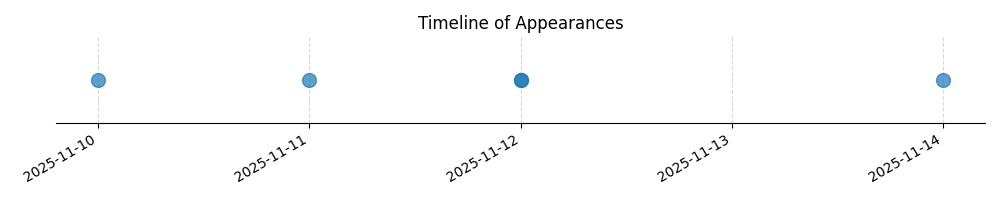

Kategorie: Letecké předpisy
Tato otázka se týká minimálních výšek pro let podle VFR (Visual Flight Rules) nad obydlenými oblastmi. Správná odpověď A odpovídá obecným předpisům pro bezpečné dodržování minimální výšky, která zohledňuje překážky v širším okolí letadla, aby se předešlo kolizi. Konkrétní hodnoty 300 m (1000 ft) nad nejvyšší překážkou v okruhu 600 m jsou stanoveny v mezinárodních leteckých předpisech (např. ICAO Annex 2, EASA SERA).

| Datum výskytu |
|---|
| 2025-11-14 |
| 2025-11-12 |
| 2025-11-11 |
| 2025-11-10 |